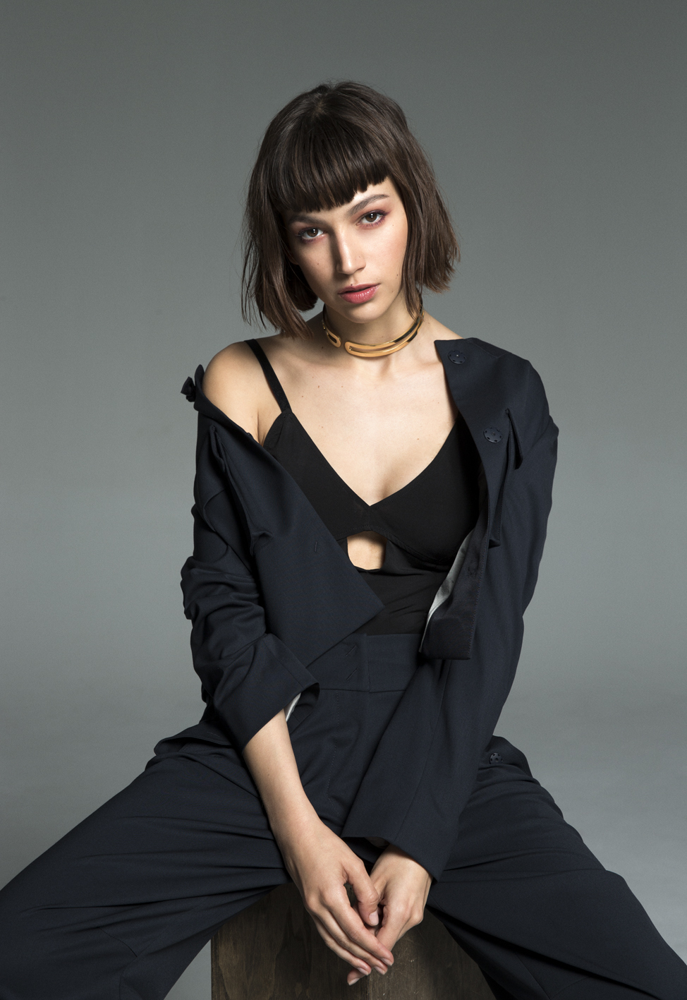
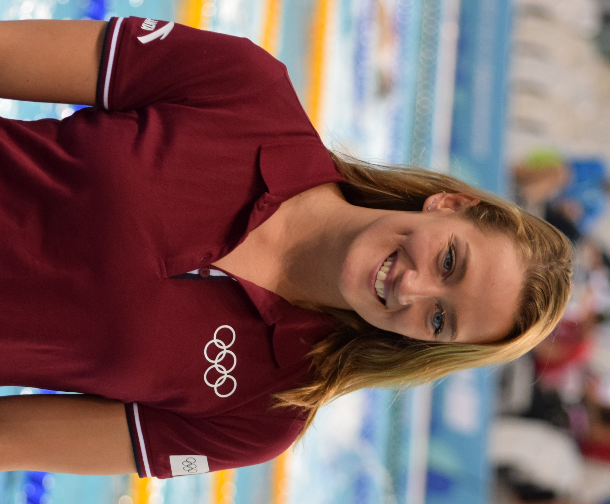
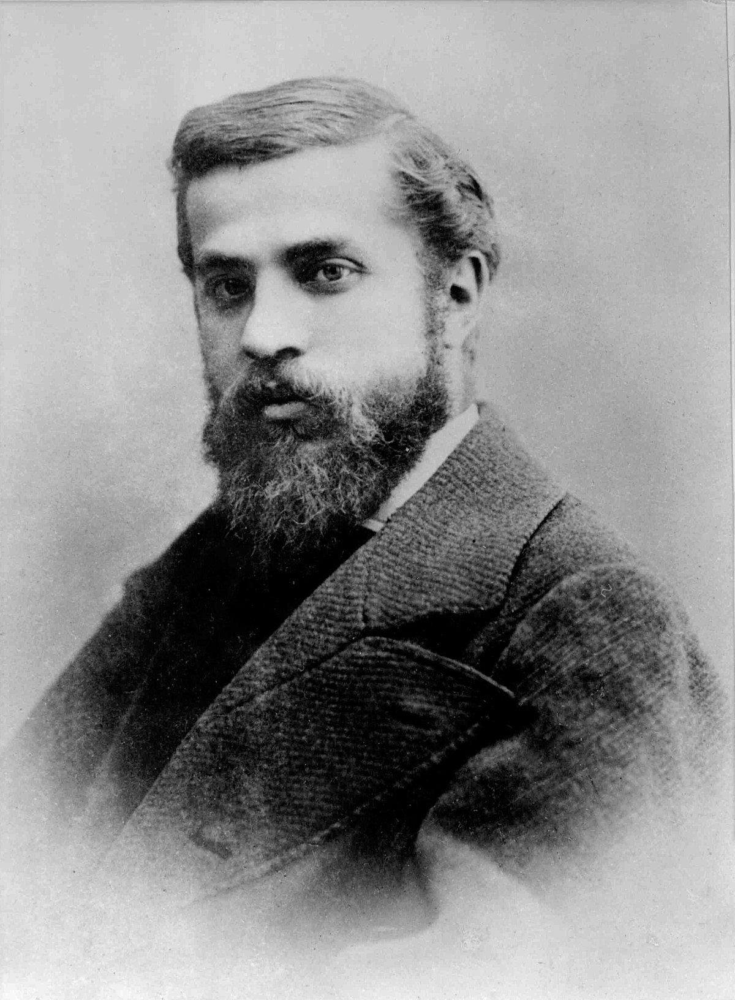

Popular People Born
Welcome to our wonderful destination! Here, history blends seamlessly with modernity, drawing visitors from all corners of the globe, including several famous personalities who have been captivated by its charm.
-
Rosalía
Born and raised on the outskirts of Barcelona, he has been described by the American radio station NPR as an "atypical pop star" due to "her musical versatility and experimental tendencies that blur the boundaries between different genres." -

Pep Guardiola
He is a Spanish former footballer and coach. He currently manages Manchester City F. C. of the English Premier League. He played in the midfield position and developed most of his professional career at F. C. Barcelona during the 1990s and early 2000s, a club with which won more than 16 national and international titles -
Pau Gasol
He is a former Spanish basketball player who played 18 seasons in the NBA, where he was champion twice, and another 3 with FC Barcelona. Pau is widely considered the best Spanish player of all time, among the best Europeans to have played in the NBA and one of the most decisive FIBA players in history. 2008 Gasol was traded to the Los Angeles Lakers.
-

Úrsula Corberó
A Spanish actress known mainly for her role as Ruth Gómez in the youth series Physics or chemistry (2008-2011) and Tokio in the series La casa de papel . (2017-2021). After the success of the latter, she made the international leap with the British series Snatch (2017-2018) and with the American film Snake Eyes (2021), where she played the antagonist. -
David Muñoz
Also known as Dabiz Muñoz. He is a Spanish chef specialized in avant-garde cuisine. His restaurant DiverXo has received three Michelin stars. -

Mireia Belmonte
Spanish athlete who competes in swimming, a specialist in freestyle, butterfly and combined styles. She is the most successful Spanish swimmer in history: Olympic champion in 2016, world champion in long course in 2017, seven-time world champion in short course and thirteen-time European champion (four in long course and nine in short).
-

Ferran Adrià
He is a Spanish chef who revolutionized the world of gastronomy and introduced it into a new era. The North American magazine Time included Adrià in the list of the 100 most innovative people in the world in 2004. His restaurant "El Bulli" was situated near the town of Roses (north of Barcelona), on the Costa Brava and began as a French restaurant. -

Carles Puyol
He is a former Spanish soccer player. He played in the defense position and his only team during his career was FC Barcelona, from the First Division of Spain, of which he was captain since the 2004-05 season. After his retirement he worked as part of the Football Sports Management Area of F.C. -
Eduard Punset
He was a renowned scientific communicator, lawyer, economist and politician. Born in Barcelona, Punset became a prominent figure in scientific dissemination in Spain, known for his television program "Redes" and his books on science and dissemination.
-
Montserrat Caballé
You know it from the Christmas Lottery announcement and from internet memes but it is more, much more. La Caballé is one of the great characters of Barcelona and one of the great sopranos of the 20th century. She can boast of having sung with Freddie Mercury and provided the soundtrack to the '92 Olympics. She is a true diva. -

Joan Miró
He is the most recognized painter in the history of the city. If you have ever heard the comment that “a five-year-old could paint that painting,” it surely refers to one of his works. He was a colleague of Picasso. -

Antoni Gaudí
He is the greatest representative of architectural modernism and is responsible for making Barcelona look like a city worthy of Alice in Wonderland and a Beatles animated film. We owe him Parc Güell, La Pedrera, Casa Batlló, the Sagrada Familia...